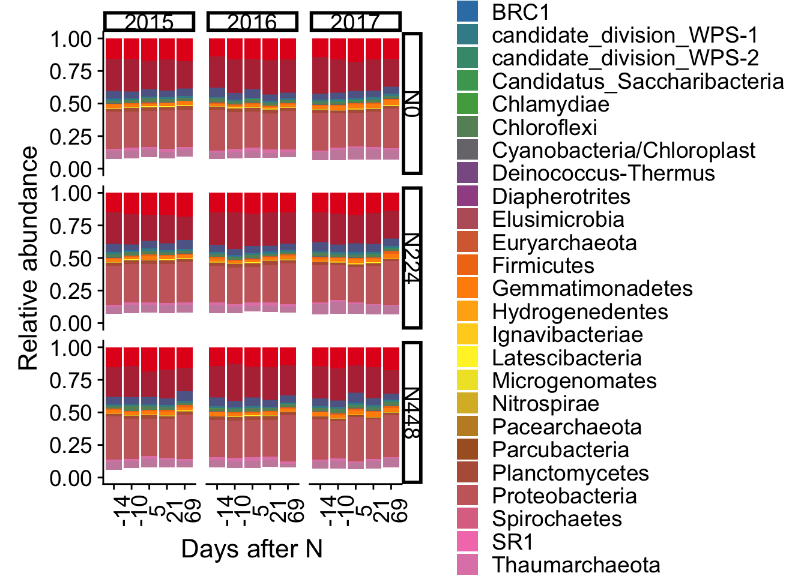
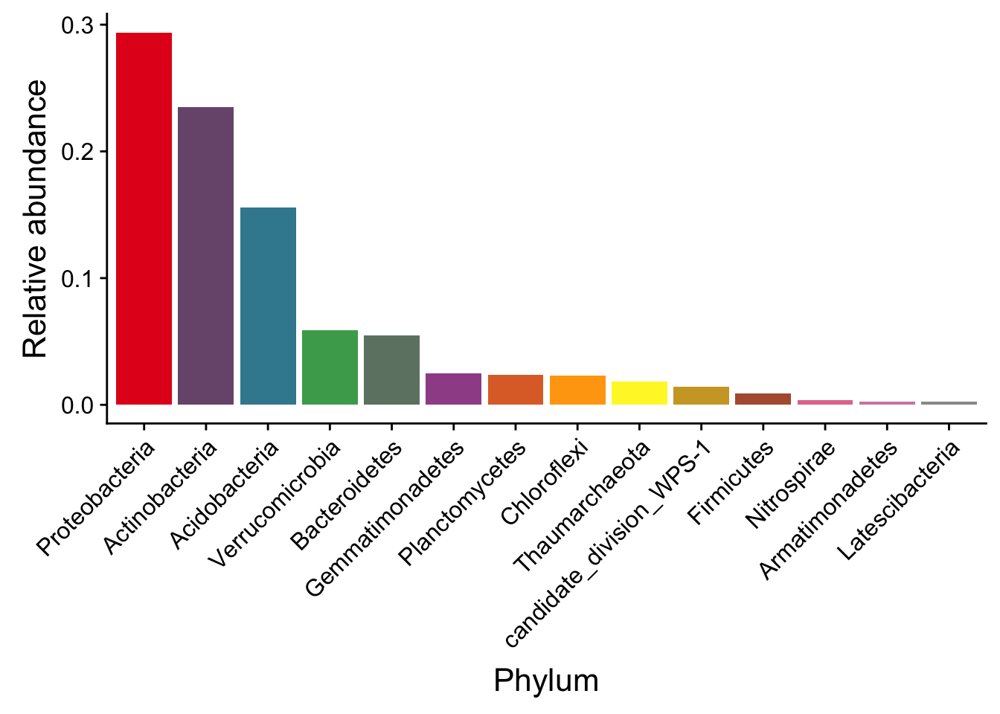
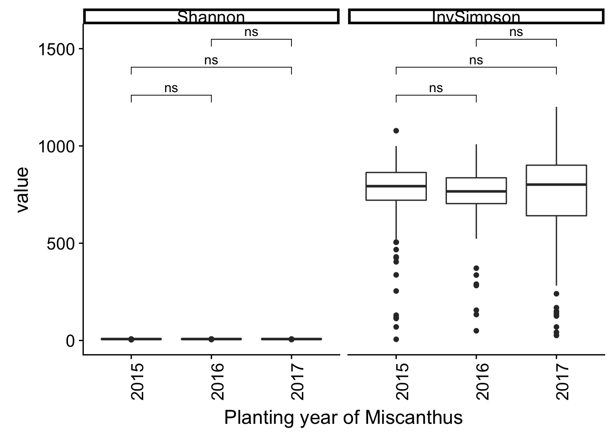
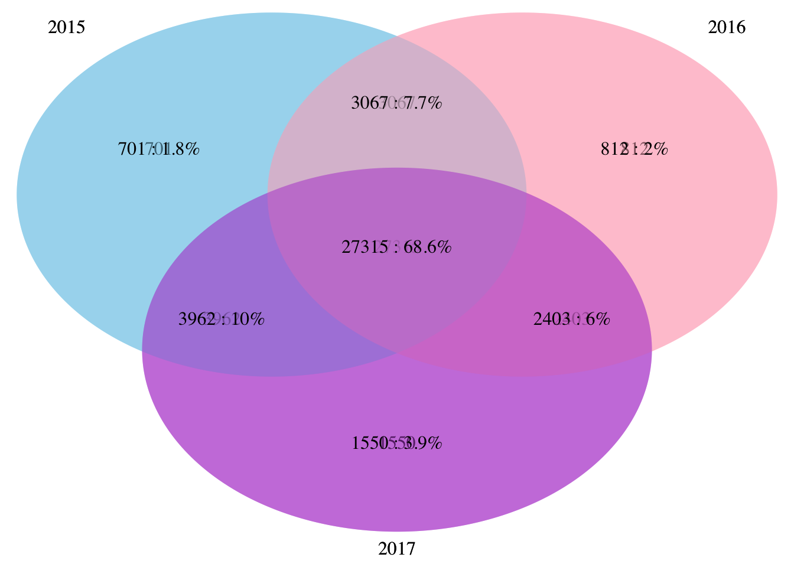
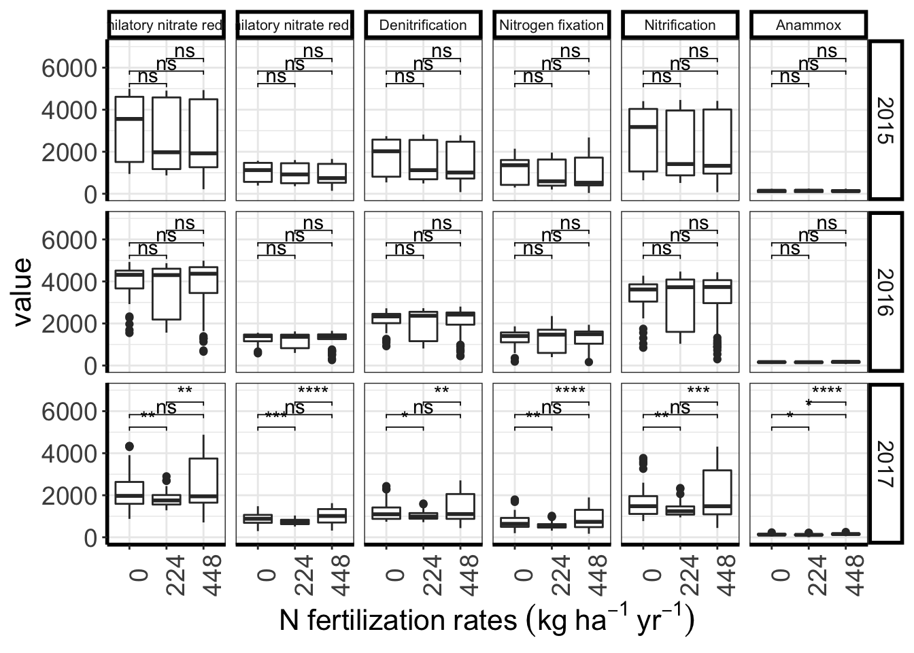
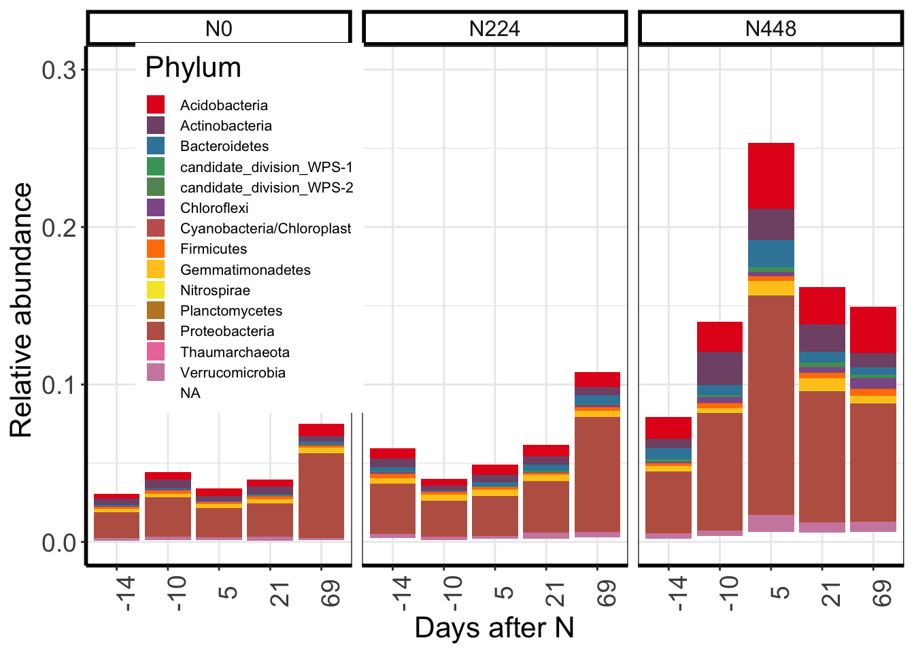
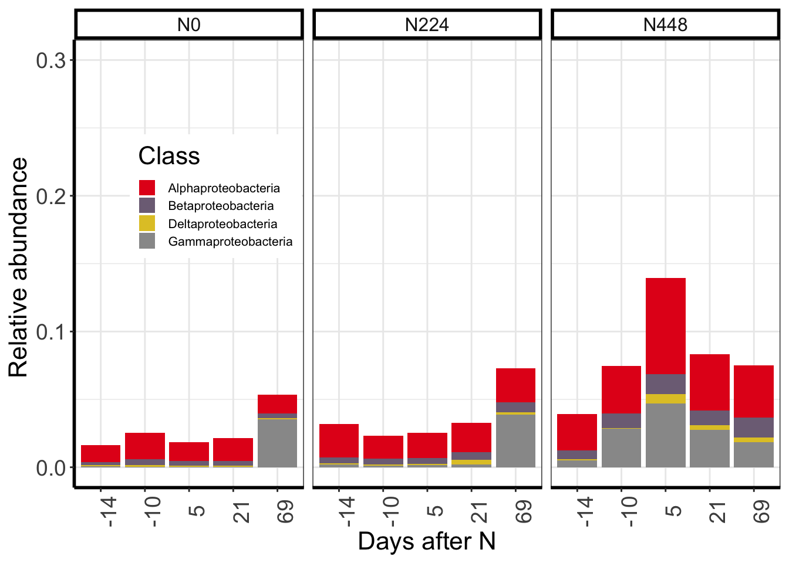
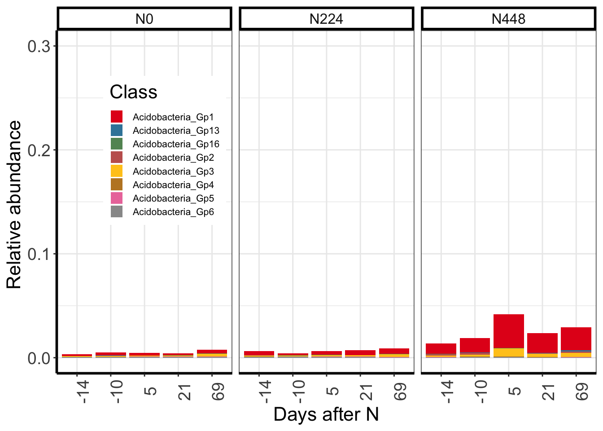
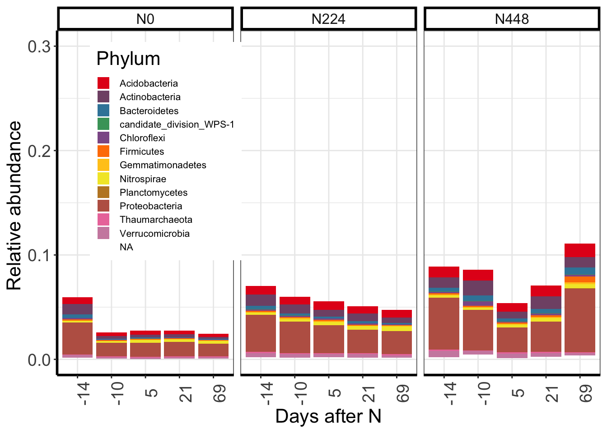
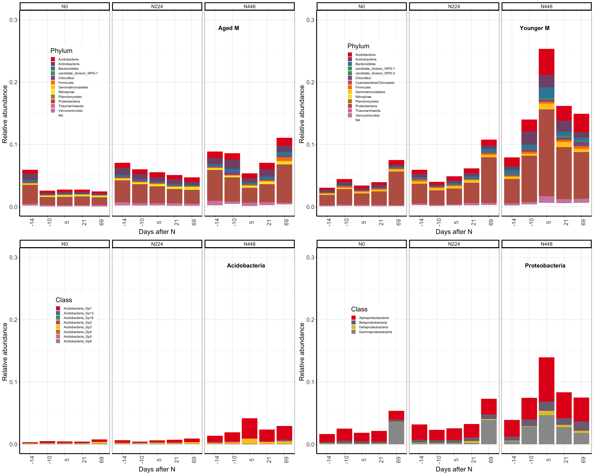

Loading library
library(phyloseq)
library(ggplot2)
library("data.table")## data.table 1.12.2 using 2 threads (see ?getDTthreads). Latest news: r-datatable.comlibrary(plyr)
library("vegan")## Loading required package: permute## Loading required package: lattice## This is vegan 2.5-5library("DESeq2")## Loading required package: S4Vectors## Loading required package: stats4## Loading required package: BiocGenerics## Loading required package: parallel##
## Attaching package: 'BiocGenerics'## The following objects are masked from 'package:parallel':
##
## clusterApply, clusterApplyLB, clusterCall, clusterEvalQ,
## clusterExport, clusterMap, parApply, parCapply, parLapply,
## parLapplyLB, parRapply, parSapply, parSapplyLB## The following objects are masked from 'package:stats':
##
## IQR, mad, sd, var, xtabs## The following objects are masked from 'package:base':
##
## anyDuplicated, append, as.data.frame, basename, cbind,
## colMeans, colnames, colSums, dirname, do.call, duplicated,
## eval, evalq, Filter, Find, get, grep, grepl, intersect,
## is.unsorted, lapply, lengths, Map, mapply, match, mget, order,
## paste, pmax, pmax.int, pmin, pmin.int, Position, rank, rbind,
## Reduce, rowMeans, rownames, rowSums, sapply, setdiff, sort,
## table, tapply, union, unique, unsplit, which, which.max,
## which.min##
## Attaching package: 'S4Vectors'## The following object is masked from 'package:plyr':
##
## rename## The following objects are masked from 'package:data.table':
##
## first, second## The following object is masked from 'package:base':
##
## expand.grid## Loading required package: IRanges##
## Attaching package: 'IRanges'## The following object is masked from 'package:plyr':
##
## desc## The following object is masked from 'package:data.table':
##
## shift## The following object is masked from 'package:phyloseq':
##
## distance## Loading required package: GenomicRanges## Loading required package: GenomeInfoDb## Loading required package: SummarizedExperiment## Loading required package: Biobase## Welcome to Bioconductor
##
## Vignettes contain introductory material; view with
## 'browseVignettes()'. To cite Bioconductor, see
## 'citation("Biobase")', and for packages 'citation("pkgname")'.##
## Attaching package: 'Biobase'## The following object is masked from 'package:phyloseq':
##
## sampleNames## Loading required package: DelayedArray## Loading required package: matrixStats##
## Attaching package: 'matrixStats'## The following objects are masked from 'package:Biobase':
##
## anyMissing, rowMedians## The following object is masked from 'package:plyr':
##
## count## Loading required package: BiocParallel##
## Attaching package: 'DelayedArray'## The following objects are masked from 'package:matrixStats':
##
## colMaxs, colMins, colRanges, rowMaxs, rowMins, rowRanges## The following objects are masked from 'package:base':
##
## aperm, applylibrary(ggpubr)## Loading required package: magrittr##
## Attaching package: 'ggpubr'## The following object is masked from 'package:plyr':
##
## mutatelibrary("VennDiagram")## Loading required package: grid## Loading required package: futile.logger##
## Attaching package: 'VennDiagram'## The following object is masked from 'package:ggpubr':
##
## rotatelibrary(openxlsx)
library(dada2)## Loading required package: Rcpplibrary(biomformat)
library(reshape2)##
## Attaching package: 'reshape2'## The following objects are masked from 'package:data.table':
##
## dcast, meltlibrary(cowplot)##
## Attaching package: 'cowplot'## The following object is masked from 'package:ggpubr':
##
## get_legend## The following object is masked from 'package:ggplot2':
##
## ggsavelibrary(phylosmith)
library(RColorBrewer)
library(devtools)## Loading required package: usethis##
## Attaching package: 'devtools'## The following object is masked from 'package:permute':
##
## checklibrary(pairwiseAdonis)## Loading required package: clusterLoading ASVs table generated from DADA2, combining with metadata file
otu_cabbi <- readRDS("data/seq_table.RDS")
tax_cabbi <- readRDS("data/tax_table.RDS")
ps <- phyloseq(otu_table(otu_cabbi, taxa_are_rows=TRUE), tax_table(tax_cabbi))
metadata<-read.csv(file="data/meatadata_cabbi.csv")
rownames(metadata)<- metadata$Samples
sample_data(ps)<- metadataTo prune out ASVs that are bigger than 10
ps.1 <- prune_species(speciesSums(ps)>=10, ps)## Warning: 'prune_species' is deprecated.
## Use 'prune_taxa' instead.
## See help("Deprecated") and help("phyloseq-deprecated").## Warning: 'speciesSums' is deprecated.
## Use 'taxa_sums' instead.
## See help("Deprecated") and help("phyloseq-deprecated").Rarefying
#sample_sums(ps.1) # there are several which has less than 9000
set.seed(100)
ps.1.rare <- rarefy_even_depth(ps.1, sample.size=9000, rngseed=TRUE)## `set.seed(TRUE)` was used to initialize repeatable random subsampling.## Please record this for your records so others can reproduce.## Try `set.seed(TRUE); .Random.seed` for the full vector## ...## 34 samples removedbecause they contained fewer reads than `sample.size`.## Up to first five removed samples are:## 1005_C_2018_P4_N0_20180425_CABBI1022_C_2018_P13_N300_20180425_CABBI1028_M_2015_P3_N400_20180425_CABBI1092_M_2016_P37_N400_20180425_CABBI1123_C_2018_P39_N0_20180425_CABBI ## ...## 18OTUs were removed because they are no longer
## present in any sample after random subsampling## ...Miscanthus samples
mischanthus <- prune_samples((sample_data(ps.1.rare))$Plant =="Miscanthus", ps.1.rare)
mis.noBulk <- prune_samples(sample_data(mischanthus)$Soil =="Rizosphere", mischanthus)#416 samplesbarchart of relative abundance of different phyla faceted by Nitrogen rates and planting year of Miscanthus
mischanthus.noBulk.relative <- transform_sample_counts(mis.noBulk, function(x) x/sum(x))
mischanthus.noBulk.relative.glom <- conglomerate_taxa(mischanthus.noBulk.relative, classification = "Phylum" )
mischanthus.noBulk.relative.glom.melt <- psmelt(mischanthus.noBulk.relative.glom)
mischanthus.noBulk.relative.glom.melt.mean <- ddply(mischanthus.noBulk.relative.glom.melt, c("OTU","Phylum","Year","Nitrogen","Days"), summarise, mean=mean(Abundance))
colourCount=length(unique((mischanthus.noBulk.relative.glom.melt.mean)$Phylum))
getPalette = colorRampPalette(brewer.pal(9, "Set1"))##these two lines to solve the problem that the warning message"In RColorBrewer::brewer.pal(n, pal) :
#n too large, allowed maximum for palette Set1 is 9"
Nitrogen <- c("0"="N0", "200"="N224", "400"="N448")
bar.mis.noBulk.phyla <- ggplot(data=mischanthus.noBulk.relative.glom.melt.mean, mapping = aes_string(x="as.factor(Days)", y="mean"))+
geom_bar(aes(fill=Phylum), stat="identity", position="stack")+guides(fill=guide_legend(ncol=1))+
facet_grid(Nitrogen~Year,labeller = labeller(Nitrogen=as_labeller(Nitrogen)))+
scale_fill_manual(values = getPalette(colourCount))+
theme(axis.text.x = element_text(angle = 90, size=14),
axis.text.y = element_text(size=14),
axis.title.y = element_text(angle=90),
panel.background=element_rect(fill="white", colour="white"),
axis.title = element_text(size = 16),
legend.text = element_text(size=14),
legend.title=element_text(size=16),
axis.line = element_line(colour = "black", size = 1, linetype = "solid"),
strip.background = element_rect(colour = "black", fill = "white",size=2, linetype="solid"),
strip.text=element_text(size=14)
)+
labs(x="Days after N", y="Relative abundance")
##ggsave(bar.mis.noBulk.phyla, file="figures/bar_relativeAbundance_phyla_mis_noBulk.pdf", units="in", width=9, height = 9)
bar.mis.noBulk.phyla
As they are similar at the phylum level along with planting year of Miscanthus and N fertilizatio rates, I will only plot the relativea bundance of diffferent phyla
mischanthus.noBulk.relative.glom.melt.mean.Phylum <- ddply(mischanthus.noBulk.relative.glom.melt, c("OTU","Phylum"), summarise, mean=mean(Abundance), sd=sd(Abundance))
index <- order(mischanthus.noBulk.relative.glom.melt.mean.Phylum$mean, decreasing=T, na.last = T)[1:15]
mischanthus.noBulk.relative.glom.melt.mean.Phylum.ordered <- mischanthus.noBulk.relative.glom.melt.mean.Phylum[index,]
mischanthus.noBulk.relative.glom.melt.mean.Phylum.ordered$Phylum <- factor(mischanthus.noBulk.relative.glom.melt.mean.Phylum.ordered$Phylum,
levels = mischanthus.noBulk.relative.glom.melt.mean.Phylum.ordered$Phylum)
mischanthus.noBulk.relative.glom.melt.mean.Phylum.ordered <- mischanthus.noBulk.relative.glom.melt.mean.Phylum.ordered[!(is.na(mischanthus.noBulk.relative.glom.melt.mean.Phylum.ordered$Phylum)),]
colourCount=length(unique((mischanthus.noBulk.relative.glom.melt.mean.Phylum.ordered )$Phylum))
getPalette = colorRampPalette(brewer.pal(9, "Set1"))
mischanthus.noBulk.relative.glom.melt.mean.Phylum.bar <- ggplot(data=mischanthus.noBulk.relative.glom.melt.mean.Phylum.ordered, mapping = aes_string(x="Phylum", y="mean"))+
geom_bar(aes( fill=Phylum), stat="identity")+guides(fill=guide_legend(ncol=2))+
scale_fill_manual(values = getPalette(colourCount))+
theme(axis.text.x = element_text(angle = 45, size=12, vjust = 1, hjust = 1),
axis.text.y = element_text(size=12),
axis.title.x = element_text(size =16),
axis.title.y = element_text(angle=90, size =16),
panel.background=element_rect(fill="white", colour="white"),
axis.title = element_text(size = 16),
legend.text = element_text(size=10),
legend.key.size = unit(4, 'mm'),
legend.title=element_text(size=12),
#legend.position = c(.7,0.5),
legend.position="none",
axis.line = element_line(colour = "black", size = 1, linetype = "solid"),
strip.background = element_rect(colour = "black", fill = "white",size=2, linetype="solid"),
strip.text=element_text(size=14)
)+
labs(x="Phylum", y="Relative abundance")
mischanthus.noBulk.relative.glom.melt.mean.Phylum.bar ## Alpha diversity Check the alpha diverist to see whether plaing year of Miscanthus has effect on it
richness <- estimate_richness(mis.noBulk, measures=c( "InvSimpson", "Shannon"))
sam <- sample_data(mis.noBulk)
sa <- data.frame(sam$Samples, sam$Year, sam$Nitrogen, sam$Days)
rownames(richness) = gsub(pattern="X*", replacement="", x=rownames(richness))
merged <- merge(richness, sa, by.x= "row.names", by.y="sam.Samples")
merged.melt <-melt(merged, id.vars=c("Row.names","sam.Year","sam.Nitrogen"), measure.vars=c("Shannon","InvSimpson"))
alpha.mis.noBulk.N <- ggplot(merged.melt, aes(x=as.factor(sam.Year),y=value))+geom_boxplot()+facet_grid(~variable)+
theme(axis.text.x = element_text(angle = 90, size=14),
axis.text.y = element_text(size=14),
axis.title.y = element_text(angle=90),
panel.background=element_rect(fill="white", colour="white"),
axis.title = element_text(size = 16),
legend.text = element_text(size=14),
legend.title=element_text(size=16),
axis.line = element_line(colour = "black", size = 1, linetype = "solid"),
strip.background = element_rect(colour = "black", fill = "white",size=2, linetype="solid"),
strip.text=element_text(size=14))+
xlab("Planting year of Miscanthus")
comp.Year <- list(c("2015","2016"), c("2015","2017"),c("2016","2017"))
alpha.mis.noBulk.N.pvalue <- alpha.mis.noBulk.N + stat_compare_means(comparisons = comp.Year, label="p.signif")
alpha.mis.noBulk.N.pvalue
Adonis analysis to see which variance drives the microbial community strucutre. As we’ve already run all these Adonis analysis and it uses up a lot of computing power, i will use eval=FALSE here
mischanthus.noBulk.df <- t(phyloseq::otu_table(mis.noBulk))
mischanthus.noBulk.df.dist <- vegdist(mischanthus.noBulk.df , method="bray")
adonis(mischanthus.noBulk.df.dist ~ as.factor(sample_data(mis.noBulk)$Nitrogen)+as.factor(sample_data(mis.noBulk)$Days)+
as.factor(sample_data(mis.noBulk)$Year)+as.factor(sample_data(mis.noBulk)$Nitrogen)*as.factor(sample_data(mis.noBulk)$Days)+
as.factor(sample_data(mis.noBulk)$Year)*as.factor(sample_data(mis.noBulk)$Nitrogen),strata=as.factor(sample_data(mis.noBulk)$Plot))by adonis, we found out planting year of Miscanthus is the largest variance, and N fertilization rates are the second.
Then we further use pairwise Adonis to see whether they are significanlty different by any of these two year
mis.noBulk.df <- t(otu_table(mis.noBulk))
mis.noBulk.df.dist <- vegdist(mis.noBulk.df, method="bray")
fac=data.frame(Year=as.factor(sample_data(mis.noBulk)$Year),days=as.factor(sample_data(mis.noBulk)$Days), Plot=as.factor(sample_data(mis.noBulk)$Plot))
pairwise.adonis2(dist(mis.noBulk.df) ~ Year*days, data=fac, strata="Plot")As there was no significant difference between M2015 and M2016, so i will combine the mtogether and see how N affect the and 2017 associtaed microbiome also by pairwise Adonis
mis.noBulk.1516 <- prune_samples(sample_data(mis.noBulk)$Comparing ==1, mis.noBulk)#276 samples
mis.noBulk.1516.df <- t(otu_table(mis.noBulk.1516))
mis.noBulk.df.1516.dist <- vegdist(mis.noBulk.1516.df, method="bray")
fac=data.frame(Nitrogen=as.factor(sample_data(mis.noBulk.1516)$Nitrogen),days=as.factor(sample_data(mis.noBulk.1516)$Days), Plot=as.factor(sample_data(mis.noBulk.1516)$Plot))
pairwise.adonis2(dist(mis.noBulk.1516.df) ~ Nitrogen*days, data=fac, strata="Plot")How N affect microbiome associated with M2017
mis.noBulk.17 <- prune_samples(sample_data(mis.noBulk)$Comparing ==2, mis.noBulk)## 139 samples
mis.noBulk.17.df <- t(otu_table(mis.noBulk.17))
fac=data.frame(Nitrogen=as.factor(sample_data(mis.noBulk.17)$Nitrogen),days=as.factor(sample_data(mis.noBulk.17)$Days), Plot=as.factor(sample_data(mis.noBulk.17)$Plot))
pairwise.adonis2(dist(mis.noBulk.17.df) ~ Nitrogen*days, data=fac, strata="Plot")It showed that there is no significant difference between M2015 and M2016. while it was significantly differnt between M2017 and M2015; M2017 and M2016
To see what ASVs were shared/unique associated with each planting year of Miscanthus as it is the largest variance to drive the community structure to be different
mis.noBulk.2015 <- prune_samples(sample_data(mis.noBulk)$Year =="2015", mis.noBulk)
no.zero.mis.noBulk.2015 <- prune_taxa(taxa_sums(mis.noBulk.2015) > 0, mis.noBulk.2015)
list.2015 <- rownames(otu_table(no.zero.mis.noBulk.2015))
mis.noBulk.2016 <- prune_samples(sample_data(mis.noBulk)$Year =="2016", mis.noBulk)
no.zero.mis.noBulk.2016 <- prune_taxa(taxa_sums(mis.noBulk.2016) > 0, mis.noBulk.2016)
list.2016 <- rownames(otu_table(no.zero.mis.noBulk.2016))
mis.noBulk.2017 <- prune_samples(sample_data(mis.noBulk)$Year =="2017", mis.noBulk)
no.zero.mis.noBulk.2017 <- prune_taxa(taxa_sums(mis.noBulk.2017) > 0, mis.noBulk.2017)
list.2017 <- rownames(otu_table(no.zero.mis.noBulk.2017))
source("new_triple_venn.R")
venn.15.16.17 <- draw.triple.venn(area1=length(list.2015), area2=length(list.2016), area3=length(list.2017), n12=length(list.2015[list.2015 %in% list.2016]),
n23=length(list.2016[list.2016 %in% list.2017]), n13=length(list.2015[list.2015 %in% list.2017]),
n123=length(list.2015[list.2015 %in% list.2016[list.2016 %in% list.2017]]), category = c("2015","2016","2017"),fill = c("skyblue", "pink1", "mediumorchid"), lty="blank")
other_venn <- draw.triple.venn2(area1=length(list.2015), area2=length(list.2016), area3=length(list.2017), n12=length(list.2015[list.2015 %in% list.2016]),
n23=length(list.2016[list.2016 %in% list.2017]), n13=length(list.2015[list.2015 %in% list.2017]),
n123=length(list.2015[list.2015 %in% list.2016[list.2016 %in% list.2017]]), category = c("2015","2016","2017"),fill = c("skyblue", "pink1", "mediumorchid"), lty="blank")
#ggsave(other_venn, file="figures/venn_diagram_mis_noBulk_percantage.pdf", units="in", height=6, width=6)to see the enriched taxa associated with aged Miscanthus or young Miscanthus; as there was no significant difference on microibal community associated with M2015 and M2016, so we will combine them together, called as aged Miscanthus
mis.noRare <- prune_samples(sample_data(ps.1)$Plant =="Miscanthus", ps.1)
mis.noRare.noBulk <- prune_samples(sample_data(mis.noRare)$Soil =="Rizosphere", mis.noRare)
sample_data(mis.noRare.noBulk)$Comparing <- as.factor(sample_data(mis.noRare.noBulk)$Comparing)
diagdds= phyloseq_to_deseq2(mis.noRare.noBulk, ~Comparing)
diagdds=DESeq(diagdds, test="Wald", fitType="parametric")
saveRDS(diagdds, file="diagdds_cabbi_comparing1vs2.rds")
diagdds <- readRDS(file="diagdds_cabbi_comparing1vs2.rds")
res <- results(diagdds, contrast=c("Comparing","1","2"))
alpha=0.01
sigtab = res[which(res$padj < alpha), ]
sigtab=cbind(as(sigtab, "data.frame"), as(tax_table(mis.noRare.noBulk)[rownames(sigtab), ], "matrix"))
dim(sigtab)
with_abund.sigtab <- cbind(sigtab , abundance=taxa_sums(mis.noBulk)[rownames(sigtab )])
write.csv(with_abund.sigtab, file="sigOTUsInMisby20152016over2017.csv")As I’ve already run the DESeq2 analysis, so i will just read the result file
with_abund.sigtab<- read.csv(file="data/sigOTUsInMisby20152016over2017.csv")
#dim: 3506 14
#length(grep(TRUE, with_abund.sigtab$log2FoldChange< (-2))) 344
#length(grep(TRUE, with_abund.sigtab$log2FoldChange>2)) 341
theme_set(theme_bw())
scale_fill_discrete <- function(palname = "Set1", ...) {
scale_fill_brewer(palette = palname, ...)
}
# Phylum order
x = tapply(with_abund.sigtab$log2FoldChange,with_abund.sigtab$Phylum, function(x) max(x))
x = sort(x, TRUE)
with_abund.sigtab$Phylum = factor(as.character(with_abund.sigtab$Phylum), levels=names(x))
# Genus order
x = tapply(with_abund.sigtab$log2FoldChange, with_abund.sigtab$Genus, function(x) max(x))
x = sort(x, TRUE)
sigASVs.genus.black <- ggplot(with_abund.sigtab, aes(x=Phylum,y=log2FoldChange))+
geom_point(data=subset(with_abund.sigtab, abs(log2FoldChange) > 2) , aes(color=Phylum))+
theme(axis.text.x=element_text(angle=45, hjust = 1,size=9),
axis.text.y = element_text(size=14),
axis.title.y = element_text(angle=90),
panel.background=element_rect(fill="white", colour="white"),
axis.title = element_text(size = 16),
legend.position = "none",
legend.box = "horizaontal",
axis.line = element_line(colour = "black", size = 1, linetype = "solid"),
strip.background = element_rect(colour = "black", fill = "white",size=2, linetype="solid"),
strip.text=element_text(size=14))Then to check the potentially associated N cycling funcitons of these significantly changed ASVs To get the OTU table and sequence file
sigotus.phylo.noRelative <- subset_taxa(mis.noBulk,taxa_names(mis.noBulk) %in% with_abund.sigtab$X)
# to get the otu table
sigASVs.1516over17.2 <- with_abund.sigtab[abs(with_abund.sigtab$log2FoldChange)>2, ]
sigotus.2.phylo.noRelative <- subset_taxa(mis.noBulk,taxa_names(mis.noBulk) %in% sigASVs.1516over17.2$X)
# to get the otu table
otu <- otu_table(sigotus.2.phylo.noRelative)
write.table(otu, "figures/otu_table_sigASVs_1516over17_log2_2.txt", row.names=T)
### make fasta
asv_seqs <- taxa_names(sigotus.2.phylo.noRelative)
asv_headers <- vector(length(taxa_names(sigotus.2.phylo.noRelative)), mode="character")
for (i in 1:length(taxa_names(sigotus.2.phylo.noRelative))) {
asv_headers[i] <- paste(">ASV", i, sep="_")
}
# making and writing out a fasta of our final ASV seqs:
asv_fasta <- c(rbind(asv_headers, asv_seqs))
write(asv_fasta, "figures/sigASVs_1516over17_log2_2.fa")I’ve run PICRUSt on HPC with the OTU table and .fasta file, so i will read the result here
result1516over17 <- read_biom("data/metagenome_predictionssigASVs_1516over17_20190708.biom")## Warning in strsplit(conditionMessage(e), "\n"): input string 1 is invalid
## in this localekegg_nitrogen_subclass <- read.xlsx("data/kegg_nitrogen_subclass.xlsx", colNames=F)
colnames(kegg_nitrogen_subclass) <- c("subclass","kid")
matrix1516over17 <- as(biom_data(result1516over17), "matrix")
result1516over17 <- data.frame()
for ( one_category in unique(kegg_nitrogen_subclass$subclass)){
ids <- kegg_nitrogen_subclass[ kegg_nitrogen_subclass$subclass %in% one_category,]$kid
sub <- subset(matrix1516over17, rownames(matrix1516over17) %in% ids)
result1516over17 <- rbind(result1516over17,colSums(sub))
rownames(result1516over17)[nrow(result1516over17)] <- one_category
}
colnames(result1516over17) <- colnames(matrix1516over17)
tresult1516over17 <- t(result1516over17)
S1516over17 <- cbind(tresult1516over17, sample_data(mis.noBulk))
subforplot1516over17 <- S1516over17[, c("Dissimilatory nitrate reduction", "Assimilatory nitrate reduction","Denitrification","Nitrogen fixation","Nitrification","Anammox","Year","Nitrogen")]
melted1516over17 <- melt(subforplot1516over17, id=c("Year","Nitrogen"))
sub.N.1516over17<- ggplot(melted1516over17, aes(x=as.factor(Nitrogen), y = value))+geom_boxplot()+facet_grid(Year~variable)+
theme(axis.text.x = element_text(angle = 90, size=14),
axis.text.y = element_text(size=14),
axis.title.y = element_text(angle=90),
panel.background=element_rect(fill="white", colour="white"),
axis.title = element_text(size = 16),
legend.text = element_text(size=14),
legend.title=element_text(size=16),
axis.line = element_line(colour = "black", size = 1, linetype = "solid"),
strip.background = element_rect(colour = "black", fill = "white",size=2, linetype="solid"),
strip.text.x = element_text(size=8),
strip.text.y = element_text(size=12)
)+
scale_x_discrete(labels=c("0"="0","200"="224","400"="448"))+
xlab(expression(N~fertilization~rates~(kg~ha^{-1}~yr^{-1})))+
ylab("value")+
ylim(0, 7000)
comp.N <- list(c("0","200"), c("0","400"),c("200","400"))
sub.N.1516over17.pvalue <- sub.N.1516over17+stat_compare_means(comparisons = comp.N, label="p.signif", method="t.test")
sub.N.1516over17.pvalue
assoicated with aged Miscanthus and young Miscanthus, repectively
M2017.noRare <- prune_samples(sample_data(mis.noRare.noBulk)$Year=="2017", mis.noRare.noBulk)
sample_data(M2017.noRare)$Nitrogen <- as.factor(sample_data(M2017.noRare)$Nitrogen)
diagdds= phyloseq_to_deseq2(M2017.noRare, ~Nitrogen)
diagdds$Nitrogen <- relevel(diagdds$Nitrogen, ref="0") # here is to set the N0 as the reference level by relevel
diagdds=DESeq(diagdds, test="Wald", fitType="parametric")
#resultsNames(diagdds)
#"Intercept" "Nitrogen_200_vs_0" "Nitrogen_400_vs_0"
res <- results(diagdds)
alpha=0.01
sigtab = res[which(res$padj < alpha), ]
#sigtab=cbind(as(sigtab, "data.frame"), as(tax_table(mis.noBulk.2017)[rownames(sigtab), ], "matrix"))
dim(sigtab)#296 18
mis.noBulk.2017.relative <- transform_sample_counts(mis.noBulk.2017, function(x) x/sum(x))
with_abund.sigtab.M2017.N <- subset_taxa(mis.noBulk.2017.relative, taxa_names(mis.noBulk.2017.relative) %in% rownames(sigtab))
saveRDS(with_abund.sigtab.M2017.N, file="data/sigOTUS_inM2017_by_N.rds")Same as above, i have run the DESEq2 so i will just read the result file
with_abund.sigtab.M2017.N <- readRDS(file="data/sigOTUS_inM2017_by_N.rds")
with_abund.sigtab.M2017.N.glom <- conglomerate_taxa(with_abund.sigtab.M2017.N, classification = "Phylum")
with_abund.sigtab.M2017.N.glom.melt <- melt_phyloseq(with_abund.sigtab.M2017.N.glom)
with_abund.sigtab.M2017.N.glom.melt.mean <- ddply(with_abund.sigtab.M2017.N.glom.melt, c("OTU","Phylum","Nitrogen","Days"), summarise, mean=mean(Abundance))
colourCount=length(unique((with_abund.sigtab.M2017.N.glom.melt.mean)$Phylum))
getPalette = colorRampPalette(brewer.pal(9, "Set1"))
M2017.c <- getPalette(colourCount)
sigASVs.M2017.N.bar <- ggplot(data=with_abund.sigtab.M2017.N.glom.melt.mean, mapping = aes_string(x="as.factor(Days)", y="mean"))+
geom_bar(aes(fill=Phylum),stat="identity", position="stack")+facet_grid(~Nitrogen,labeller = labeller(Nitrogen=as_labeller(Nitrogen)))+
scale_fill_manual(values = M2017.c)+
theme(axis.text.x = element_text(angle = 90, size=14),
axis.text.y = element_text(size=14),
axis.title.y = element_text(angle=90),
panel.background=element_rect(fill="white", colour="white"),
axis.title = element_text(size = 16),
legend.text = element_text(size=8),
legend.title=element_text(size=16),
legend.position = c(0.2, 0.65),
legend.key.size = unit(4, "mm"),
axis.line = element_line(colour = "black", size = 1, linetype = "solid"),
strip.background = element_rect(colour = "black", fill = "white",size=2, linetype="solid"),
strip.text.x = element_text(size=12),
strip.text.y = element_text(size=12)
)+
xlab("Days after N")+
ylab("Relative abundance ")+
ylim(c(0.00,0.30))
sigASVs.M2017.N.bar
As there is shooting increase of phylum Proteobacteria once after fertilizer application, i would like to see what are composed of Proteobacteria in this significantly changed ASvs in M2017
with_abund.sigtab.M2017.N.Proteobacteria <- subset_taxa(with_abund.sigtab.M2017.N, Phylum =="Proteobacteria")
with_abund.sigtab.M2017.N.Proteobacteria.glom.class <- conglomerate_taxa(with_abund.sigtab.M2017.N.Proteobacteria, classification="Class")
with_abund.sigtab.M2017.N.Proteobacteria.melt <- melt_phyloseq(with_abund.sigtab.M2017.N.Proteobacteria.glom.class)
with_abund.sigtab.M2017.N.Proteobacteria.melt.mean <- ddply(with_abund.sigtab.M2017.N.Proteobacteria.melt, c("OTU","Class","Nitrogen","Days"), summarise, mean=mean(Abundance))
colourCount=length(unique((with_abund.sigtab.M2017.N.Proteobacteria.melt.mean)$Class))
getPalette = colorRampPalette(brewer.pal(9, "Set1"))
Class.proteobacteria <- ggplot(data=with_abund.sigtab.M2017.N.Proteobacteria.melt.mean, mapping = aes_string(x="as.factor(Days)", y="mean"))+
geom_bar(aes(fill=Class),stat="identity", position="stack")+facet_grid(~Nitrogen,labeller = labeller(Nitrogen=as_labeller(Nitrogen)))+
scale_fill_manual(values = getPalette(colourCount))+
theme(axis.text.x = element_text(angle = 90, size=14),
axis.text.y = element_text(size=14),
axis.title.y = element_text(angle=90),
panel.background=element_rect(fill="white", colour="white"),
axis.title = element_text(size = 16),
legend.text = element_text(size=8),
legend.title=element_text(size=16),
legend.position = c(0.2, 0.65),
legend.key.size = unit(4, "mm"),
axis.line = element_line(colour = "black", size = 1, linetype = "solid"),
strip.background = element_rect(colour = "black", fill = "white",size=2, linetype="solid"),
strip.text.x = element_text(size=12),
strip.text.y = element_text(size=12)
)+
xlab("Days after N")+
ylab("Relative abundance ")+
ylim(c(0.00,0.30))
Class.proteobacteria Also check the Acidobacteria in significantly changed ASVs in M2017
with_abund.sigtab.M2017.N.Acidobacteria<- subset_taxa(with_abund.sigtab.M2017.N, Phylum =="Acidobacteria")
with_abund.sigtab.M2017.N.Acidobacteria.glom.class <- conglomerate_taxa(with_abund.sigtab.M2017.N.Acidobacteria, classification="Class")
with_abund.sigtab.M2017.N.Acidobacteria.melt <- melt_phyloseq(with_abund.sigtab.M2017.N.Acidobacteria.glom.class)
with_abund.sigtab.M2017.N.Acidobacteria.melt.mean <- ddply(with_abund.sigtab.M2017.N.Acidobacteria.melt, c("OTU","Class","Nitrogen","Days"), summarise, mean=mean(Abundance))
colourCount=length(unique((with_abund.sigtab.M2017.N.Acidobacteria.melt.mean)$Class))
getPalette = colorRampPalette(brewer.pal(9, "Set1"))
Class.Acidobacteria <- ggplot(data=with_abund.sigtab.M2017.N.Acidobacteria.melt.mean, mapping = aes_string(x="as.factor(Days)", y="mean"))+
geom_bar(aes(fill=Class),stat="identity", position="stack")+facet_grid(~Nitrogen,labeller = labeller(Nitrogen=as_labeller(Nitrogen)))+
scale_fill_manual(values = getPalette(colourCount))+
theme(axis.text.x = element_text(angle = 90, size=14),
axis.text.y = element_text(size=14),
axis.title.y = element_text(angle=90),
panel.background=element_rect(fill="white", colour="white"),
axis.title = element_text(size = 16),
legend.text = element_text(size=8),
legend.title=element_text(size=16),
legend.position = c(0.2, 0.65),
legend.key.size = unit(4, "mm"),
axis.line = element_line(colour = "black", size = 1, linetype = "solid"),
strip.background = element_rect(colour = "black", fill = "white",size=2, linetype="solid"),
strip.text.x = element_text(size=12),
strip.text.y = element_text(size=12)
)+
xlab("Days after N")+
ylab("Relative abundance ")+
ylim(c(0.00,0.30))
Class.Acidobacteria
See how N affect (2015+2016)
mis.noRare.no2017 <-prune_samples(sample_data(mis.noRare.noBulk)$Year !="2017", mis.noRare.noBulk)
sample_data(mis.noRare.no2017)$Nitrogen <- as.factor(sample_data(mis.noRare.no2017)$Nitrogen)
diagdds.1516= phyloseq_to_deseq2(mis.noRare.no2017, ~Nitrogen)
diagdds.1516$Nitrogen <- relevel(diagdds.1516$Nitrogen, ref="0") # here is to set the N0 as the reference level by relevel
diagdds.1516=DESeq(diagdds.1516, test="Wald", fitType="parametric")
#resultsNames(diagdds)
#"Intercept" "Nitrogen_200_vs_0" "Nitrogen_400_vs_0"
res.1516 <- results(diagdds.1516)
alpha=0.01
sigtab.1516 = res.1516[which(res.1516$padj < alpha), ]#286 7
write.csv(sigtab.1516, file="data/sigOTUs_M1516_N.csv")Read the result file of DESeq2 file
sigtab.1516 <- read.csv(file="data/sigOTUs_M1516_N.csv")
mis.noBulk.no2017 <- prune_samples(sample_data(mis.noBulk)$Year != "2017", mis.noBulk)
mis.noBulk.no2017.relative <- transform_sample_counts(mis.noBulk.no2017, function(x) x/sum(x))
sigASVs.1516.N.phylo <- subset_taxa(mis.noBulk.no2017.relative, taxa_names(mis.noBulk.no2017.relative) %in% sigtab.1516$X)
saveRDS(sigASVs.1516.N.phylo, file="data/sigOTUS_inM1516_by_N.rds")
sigASVs.1516.N.glom <- conglomerate_taxa(sigASVs.1516.N.phylo, classification = "Phylum")
sigASVs.1516.N.glom.melt <- melt_phyloseq(sigASVs.1516.N.glom)
sigASVs.1516.N.glom.melt.mean <- ddply(sigASVs.1516.N.glom.melt, c("OTU","Phylum","Nitrogen","Days"), summarise, mean=mean(Abundance))
sigASVs.M1516.N.bar <- ggplot(data=sigASVs.1516.N.glom.melt.mean, mapping = aes_string(x="as.factor(Days)", y="mean"))+
geom_bar(aes(fill=Phylum),stat="identity", position="stack")+facet_grid(~Nitrogen,labeller = labeller(Nitrogen=as_labeller(Nitrogen)))+
scale_fill_manual(values = M2017.c[sort(unique((with_abund.sigtab.M2017.N.glom.melt.mean)$Phylum)) %in% sort(unique((sigASVs.1516.N.glom.melt.mean)$Phylum))]
)+
theme(axis.text.x = element_text(angle = 90, size=14),
axis.text.y = element_text(size=14),
axis.title.y = element_text(angle=90),
panel.background=element_rect(fill="white", colour="white"),
axis.title = element_text(size = 16),
legend.text = element_text(size=8),
legend.title=element_text(size=16),
legend.position = c(0.2, 0.65),
legend.key.size = unit(4, "mm"),
axis.line = element_line(colour = "black", size = 1, linetype = "solid"),
strip.background = element_rect(colour = "black", fill = "white",size=2, linetype="solid"),
strip.text.x = element_text(size=12),
strip.text.y = element_text(size=12)
)+
xlab("Days after N")+
ylab("Relative abundance ")+
ylim(c(0.00,0.30))
sigASVs.M1516.N.bar
To put enriched ASvs assocaited in M1516 or M17 to compare
sigASVs.M1516.M17.proteobacteria.Acidobacteria <- ggarrange(sigASVs.M1516.N.bar,sigASVs.M2017.N.bar, Class.Acidobacteria, Class.proteobacteria,
labels=c("Aged M","Younger M","Acidobacteria", "Proteobacteria"),
label.x=0.7,
label.y=0.9,
ncol=2,
nrow=2)
sigASVs.M1516.M17.proteobacteria.Acidobacteria
We have a question: Early season Miscanthus has more stimulated microbial community from ROOTS BEING THERE (UNLIKE CORN) and thus less SIMILAR TO corn than the later season Miscanthus. Is this true? Here i will only see the N0 associated with Miscanthus and Corn. and devided each of them to be two groups: Early and late so wil be EM, LM, EC,LC From ps.1.rare
# #pruning out the bulk samples
# ps.1.rare.noBulk <- prune_samples(sample_data(ps.1.rare)$Soil != "Bulk", ps.1.rare)
# #then only get N0 samples
# ps.1.rare.noBulk.N0 <- prune_samples(sample_data(ps.1.rare.noBulk)$Nitrogen == "0", ps.1.rare.noBulk)
# #Define Early and Late season categorical variable and add this new variable into sample data
# #early season is to be sampling days equal to -14, -10, 5
# sample_data(ps.1.rare.noBulk.N0)$Early = factor(get_variable(ps.1.rare.noBulk.N0, "Days") %in% c("-14","-10","5"))
# sample_data(ps.1.rare.noBulk.N0)$Late = factor(get_variable(ps.1.rare.noBulk.N0, "Days") %in% c("21","69"))
# # # only Miscanthus.
# # Mis.noBulk.N0 <- prune_samples(sample_data(ps.1.rare.noBulk.N0)$Plant =="Miscanthus", ps.1.rare.noBulk.N0)
# EM <- prune_samples(sample_data(Mis.noBulk.N0)$Early =="TRUE", Mis.noBulk.N0)
# LM <- prune_samples(sample_data(Mis.noBulk.N0)$Late =="TRUE", Mis.noBulk.N0)
# ##only Corn
# corn.noBulk.N0 <- prune_samples(sample_data(ps.1.rare.noBulk.N0)$Plant =="Corn", ps.1.rare.noBulk.N0)
# EC <- prune_samples(sample_data(corn.noBulk.N0)$Early =="TRUE", corn.noBulk.N0)
# LC <- prune_samples(sample_data(corn.noBulk.N0)$Late =="TRUE", corn.noBulk.N0)Now we have the EM, LM, EC, LC. i will firstly use pairwise adonis to compare them
# ps.1.rare.noBulk.N0.df <- t(otu_table(ps.1.rare.noBulk.N0))
# ps.1.rare.noBulk.N0.df.dist <- vegdist(ps.1.rare.noBulk.N0.df, method="bray")
# fac=data.frame(Plant=as.factor(sample_data(ps.1.rare.noBulk.N0)$Plant), Early=sample_data(ps.1.rare.noBulk.N0)$Early,
# Plot=as.factor(sample_data(ps.1.rare.noBulk.N0)$Plot))
# pairwise.adonis2(dist(ps.1.rare.noBulk.N0.df) ~ Plant*Early, data=fac, strata="Plot")